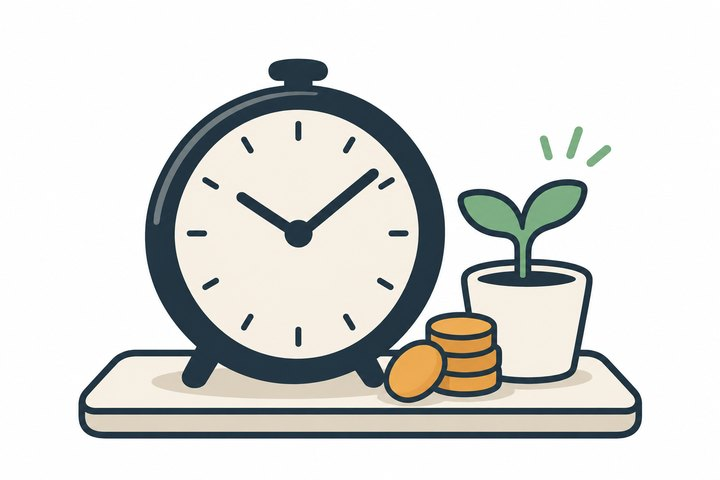

iPhone・iPad・Android の禁酒・禁煙・節酒のカウンター
やめた時間と、
今日の数をひと目で。
お酒とたばこを、やめるか減らすかを選んで数える記録のアプリです。やめるなら、最後に飲んで（吸って）からの時間を数え上げます。減らすなら、1杯・1本ごとに1押し。飲んでしまった日を記録しても、それまでの日数は消えません。
App Store・Google Play で配信予定買い切りで全部の機能が使えます。月額・アプリ内課金・広告・アカウントはありません。

こんな困りごとのために
飲んだら、記録がリセットされる
［飲んだ］を記録しても、しなかった日の合計といちばん長い日数は消えません。記録から計算し直すだけです。
やめるのではなく、減らしたい
お酒とたばこ、それぞれ「やめる」か「減らす」を選べます。減らすなら、今日の数と目安を並べて出します。
数えるのが面倒
大きな［＋1杯］［＋1本］を1押し。押しまちがえたら［1つ取り消す］。
責められたくない
目安を超えても、赤い警告や音は出しません。色と短い言葉で知らせるだけ。記録したあとも「ここまでの日数はそのまま」と伝えます。
データが消えた
記録は押した瞬間に端末に保存。ゴミ箱は30日。CSV で書き出して、機種変更のときに読みこめます。
浮いたお金を見たい
ふだんの量と1杯（1本）の値段を入れると、浮いたお金が出ます。
できること
| やめる | 最後に飲んで（吸って）からの時間（日・時間・分）・いまの続き・しなかった日・いちばん長い日数・浮いたお金。続いた日数を1枚の絵にして共有 |
|---|---|
| 減らす | 今日の数と目安・今月の合計・目安の中に収まった日・1日あたりの平均・浮いたお金 |
| 記録 | カレンダーと日ごとの一覧。記録の時刻と数を直す・ゴミ箱へ（30日） |
| グラフ | 対象ごとの月の合計（6か月）。同じ値を表でも |
| 対象 | お酒・たばこの2つまで。やり方・ふだんの量・値段・目安を直す・始め直す（記録は消さない）・しまう |
| 書き出し | CSV で書き出す・読みこむ |
医療について
ひかえめは、自分でつけた記録を数えるアプリです。医療や体の変化の助言はしません。やめるのがつらいときは、医療機関や地域の相談窓口に相談してください。